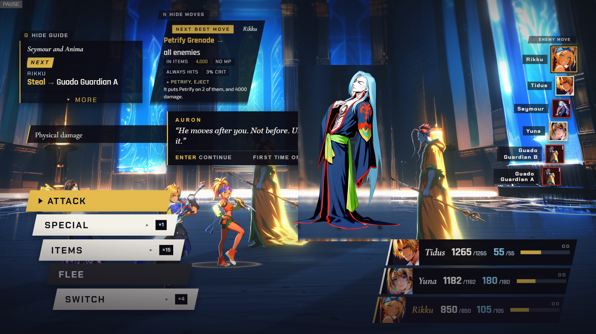
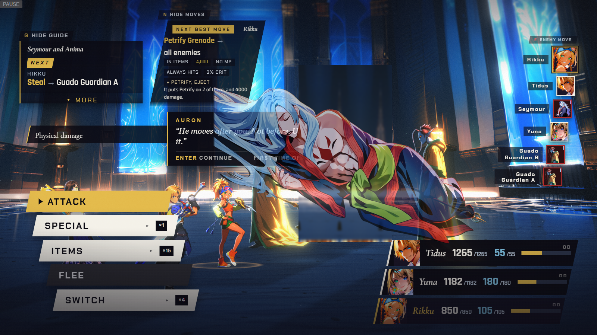
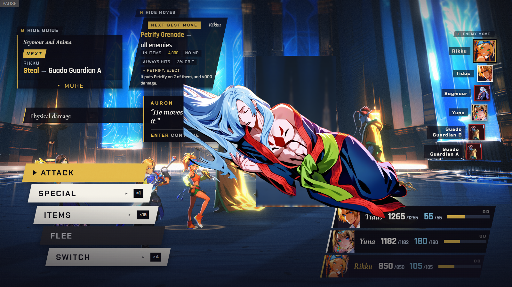
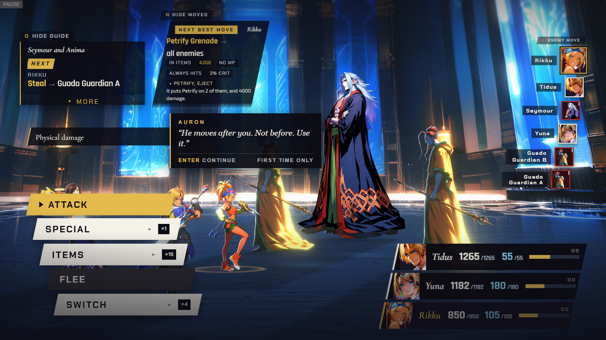
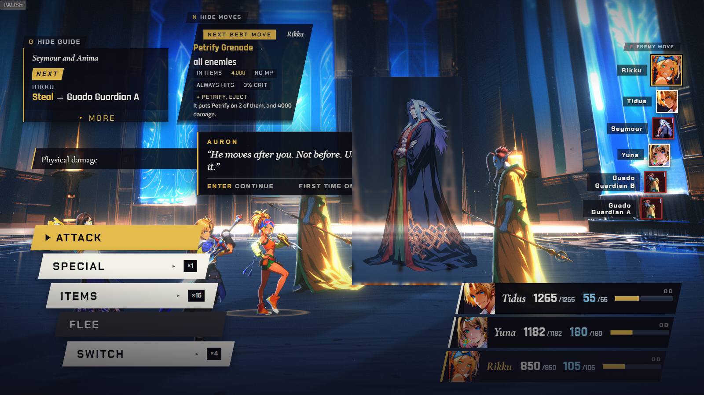
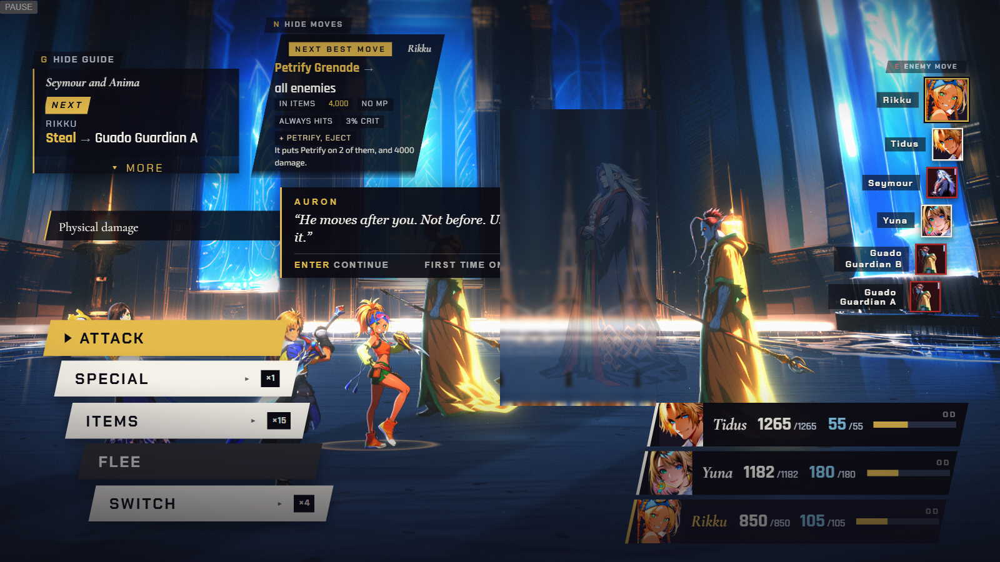
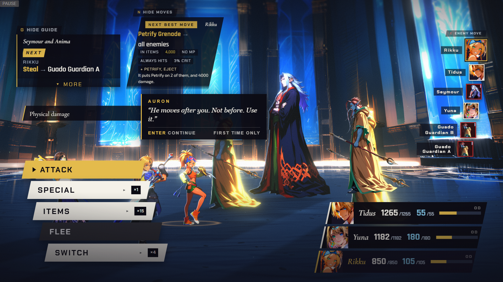
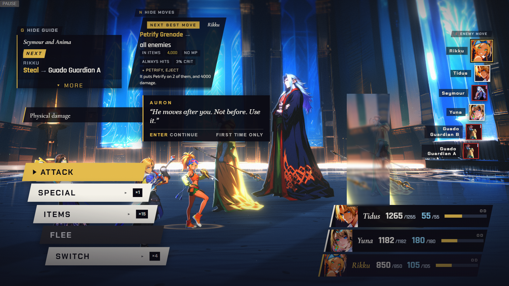

Decision 2 — how do Seymour, the Guardians and Anima leave?

The global default: falls and dissolves into pyreflies in 620 ms (real capture, the same code path, a different FFX enemy).
“dissolve him into pyreflies — it would break the whole Seymour arc.” presentation.md row 142



Hurt, then the ko painting drops in and settles — composited from the existing hurt/ko candidates with opacity and offset only.
“He dies and leaves a body.” presentation.md row 142



The Chapter 6 recipe (dim, step back) — but that rule is for humans who survive a loss. Seymour does not, so this is the wrong class for him.
“They lose and the scene continues. Nothing dissolves.” presentation.md row 134
The fix pass's stopgap: enemy eject now dissolves and removes them, matching every ordinary monster.
“Living Guado bodyguards. They lose.” presentation.md row 140


Dims and steps back out of frame — the same 'yields' kind already shipped for Leblanc, Logos and Ormi (D-035), extended to the Guardians as D-035's own where field already names them for it.
“More of their fellows chase the party out of the temple.” presentation.md row 140